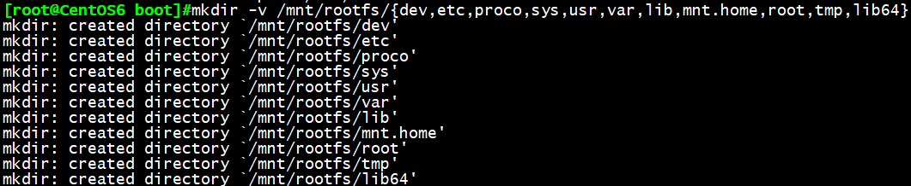

CentOS启动相关最重要的几个文件有：内核vmlinuz文件、虚拟文件系统initramfs文件、grub文件以
及init启动程序，围绕这几个文件，我们来制作一个能够简单启动的自制Linux系统
实验思路：
CentOS6的启动流程如下
1.加载BIOS的硬件信息，进行POST加电自检
2.读取第一个启动设备MBR的引导加载程序(grub)的启动信息
3.加载核心操作系统的核心信息，核心开始解压缩，并尝试驱动所有的硬件设备
4.核心执行init程序，并获取默认的运行信息
5.init程序执行/etc/rc.d/rc.sysinit文件
6.启动核心的外挂模块
7.init执行运行的各个批处理文件(scripts)
8.init执行/etc/rc.d/rc.local
9.执行/bin/login程序，等待用户登录
10.登录之后开始以Shell控制主机
其中与启动相关最重要的几个文件有：内核vmlinuz文件、虚拟文件系统initramfs文件、grub文件以
及init**启动程序**，接下来就围绕这几个重要文件，来制作一个能够简单启动的自制Linux系统
准备环境：
CentOS6虚拟服务器1台，准备一个硬盘或者U盘，本实验我们以一块20G的虚拟硬盘为例制作一个简单的
Linux系统
具体步骤：
第一步：针对新增加的20G硬盘创建两个分区dev/sdb1，dev/sdb2
fdisk /dev/sdb
第二步：创建文件系统，将/dev/sdb1，/dev/sdb2两个分区文件系统设置为ext4格式
mkfs.ext4 /dev/sdb1
mkfs.ext4 /dev/sdb2
第三步：挂载/boot目录
mkdir /mnt/boot 此处挂载子目录必须为boot
mount /dev/sdb1 /mnt/boot
第四步：安装gurb
grub-install –root-director=/mnt /dev/sdb
hexdump -C /dev/sdb -n 512 -v 查看一阶段是否创建成功，446字节已生成
ls /mnt/boot 查看二阶段是否创建成功，grub目录已生成
第五步:拷贝内核vmlinuz文件及虚拟文件系统initramfs文件
cp /boot/vmlinuz-VERSION /mnt/boot/vmlinuz
cp /boot/initramfs-VERSION.img /mnt/boot/initramfs.img
第六步:设置grub.conf文件
vim /grub.conf
default=0
timeout=5
title linux
kernel /vmlinuz-VERSION root=/dev/sda2 init=/bin/bash
initrd /initramfs.img
第七步：挂载根目录
mkdir /mnt/rootfs
mount /dev/sdb2 /mnt/rootfs
第八步：复制相关命令和库文件
如：ifconfig，insmod，ping，mount，ls cat，df，lsblk，blkid等
第九步：准备根目录下必要目录
mkdir /mnt/rootfs/{dev,etc,proco,sys,usr,var,lib,mnt.home,root,tmp,lib64} -v
sync；sync；sync； 确保写入硬盘

第十步：安装必要的模块，如网络模块等
第十一步：关机此服务器，并将20G硬盘安装到一台无硬盘启动的虚拟机服务器上
![C4]~MJXP350W{7KIN`G88G0](http://www.178linux.com/wp-content/uploads/2018/05/C4MJXP350W7KING88G0.png)